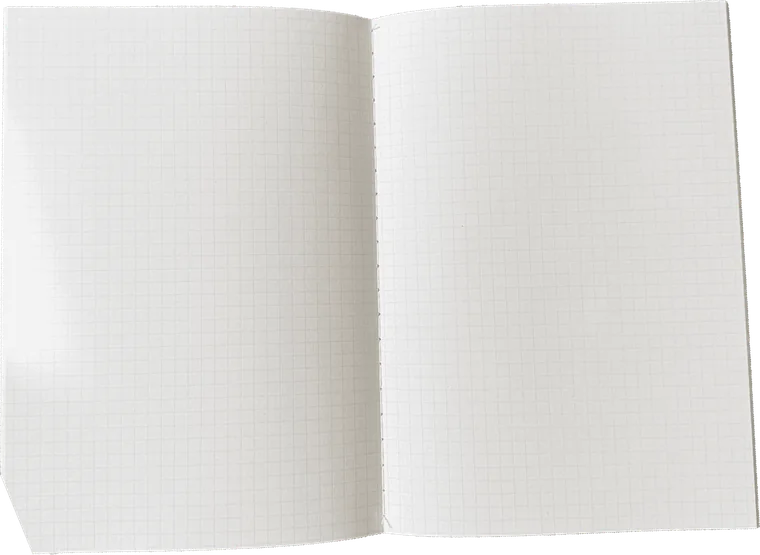
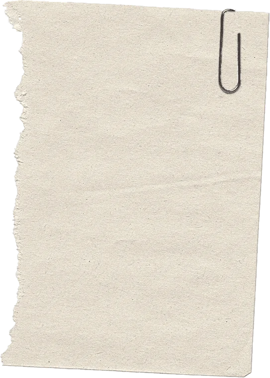
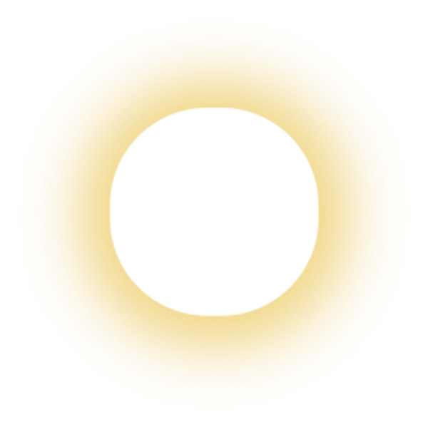
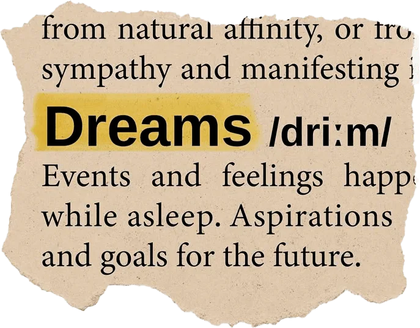
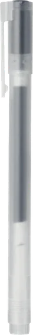
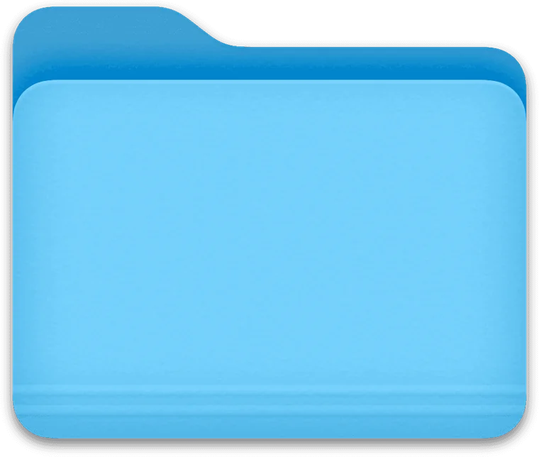

Old Devil Moon





Akshayaa Kashyap
Software Engineer
AI & Data
a thoughtful process of turning messy data into decisions that sharpen clarity, and spark momentum.

Skills
Recently Made
Other Work
About
I'm a software engineer with AI specialist experience, working mostly where data analysis meets model development. The through-line in my work is turning something messy — a CRM export, a scraped lead list, a noisy microscopy image — into something a person can read and act on.
Most recently that meant CRM dashboards that cut decision time by a quarter, LLM benchmarking that lifted response accuracy by 15%, and a lead-scoring change that raised conversion by 15% after the data showed follow-up speed mattered more than anyone expected.
Outside client work I build things to understand them properly — a residual U-Net for microscopy halo removal, a CycleGAN trained on unpaired landscapes, a task scheduler that solves your to-do list as a travelling salesman problem. I also write on Substack.
Get in touch
My inbox is open — whether it's a role, a collaboration on something AI-shaped, or a question about any of the projects above.